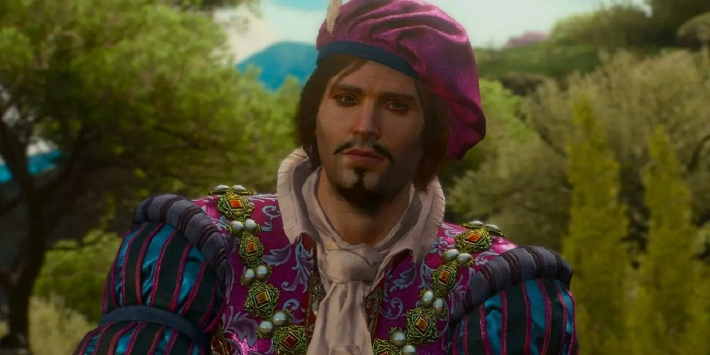

Geralt de Rivia es un guerrero errante entrenado desde la infancia en la caza de criaturas peligrosas. Sometido a un riguroso proceso de mutación, obtuvo habilidades sobrehumanas que le permiten enfrentar amenazas que pocos pueden combatir. Su vida está marcada por la lucha constante contra monstruos, pero también por dilemas morales en un mundo donde el bien y el mal no siempre están claramente definidos.
Aliados:
Yennefer de vengerberg
Es el gran amor de geralt de rivia y una poderosa hechicera
Cirilla
Es la princesa de Cintra y la aprendiz de geralt y Yennefer. Su destino esta entrelazado con el del brujo Geralt

Jaskier
Es un trovador y poeta muy talentoso. El es un amigo cercano y compañero de viaje de Geralt de Rivia